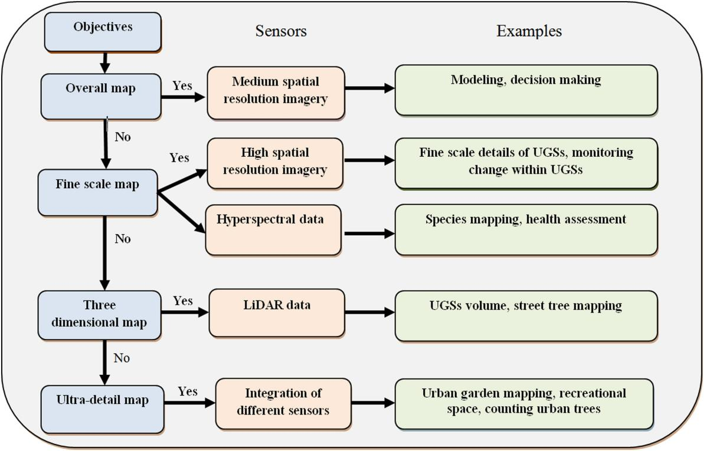
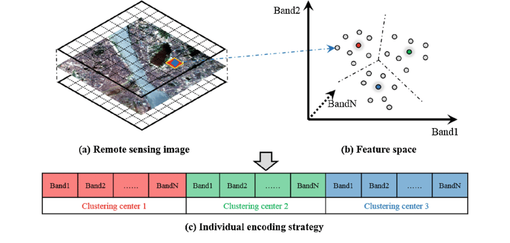
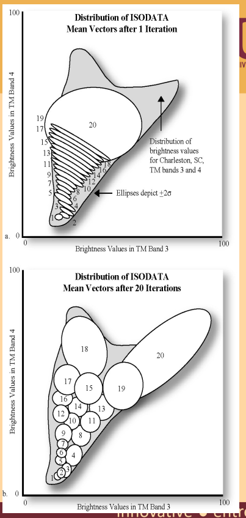
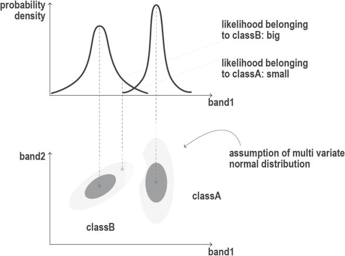
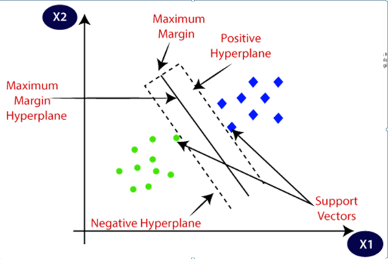
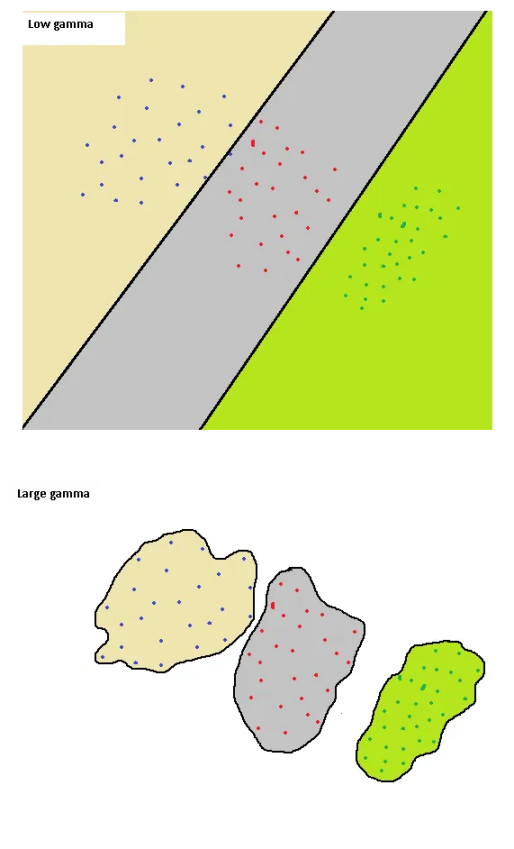

7 Classification
7.1 Summary
7.1.1 Review of how classified data is used
Different sensors used for different mapping purposes, but can be mixed and matched (used intechangably).

Source:Shahtahmassebi et al. 2021
- Classification and regression trees (CART)
classification trees:
Gini impurity= 1-(probability of yes)^2-(the probability of no)^2
regression trees:
Move to each point on the x axis > calculate the average > use this average as a new threshold and get the SSR. >Use the threshold that gives smallest SSR.> Repeat for the remaining sections.
Solve Overfitting:
limit how trees grow (e.g. a minimum number of pixels in a leaf, 20 is often used)
Weakest link pruning (with tree score)
*The second method is more complicated, usually the first method is sufficient
- Random Forests
For each tree about 70% of the training data is used in the bootstrap, 30% is left out of the bag (OOB).> Test the OOB data in the forest where all the trees didn’t use it.> Most votes wins!Repeat for all OOB samples
*Multiple is better than one, so usually research uses RF instead of CART
7.1.2 How to classify remotely sensed data
apply this to imagery(Image classification)
- Unsupervised(clustering/k-means)

Source:Yuting Wan
*DBSCAN can handle complex data, is able to identify clusters with irregular shapes, but need set suitable parameters and can’t handle where different classes can have similar spectral characteristics and can overlap.

Source:Jensen 2016 p.409 / Muhammad Zulkarnain Abdul Rahman
*ISODATA is capable of adjusting its parameters during the clustering process, and can handle a pixel contains a mixture of different land covers, but may have difficulty handling complex classes that have a mixture of different land covers.
- Supervised

Source:Núñez et al. 2018 High-Resolution Satellite Imagery Classification for Urban Form Detection
*ML is often considered one of the most accurate classification algorithms for remote sensing data, especially when the data is normally distributed, can handle multiple classes in the data.But deviations from normality can lead to biased classification results, and it’s sensitive to training data and time-consuming.

Source:skilltohire

Source:Soner Yildirim
*SVM doesn’t need parametric, making it suitable for remote sensing data that may not be normally distributed. And it can handle high-dimensional remote sensing data with many features. But it lack interpretability, making it difficult to understand why certain classification decisions were made.
7.2 Applications
- SVM
In (Pal and Mather 2006), two experiments were conducted to compare the performance of multi-class support vector machines (SVMs) against maximum likelihood (ML) and artificial neural network (ANN) methods in terms of classification accuracy. The experiments focused on land cover classification using multispectral (Landsat-7 ETM+) and hyperspectral (DAIS) data in test areas located in eastern England and central Spain. The findings demonstrate that the SVM classifier achieved higher classification accuracy compared to the ML and ANN classifiers. Furthermore, the results suggest that the SVM classifier is suitable for use with small training datasets and high-dimensional data.
In this article, one against one of SVM performs better than one against the rest, The higher training time requirements of the ‘one against one’ approach may be due the algorithm used to solve quadratic programming optimization problem.The results indicate that SVM can achieve high classification accuracy with high dimensional data, even if the size of the training dataset is small.
It is recommended to use one against one to generate multi-class SVM. But is ““one against one performing better than one against the rest” always been like this, or is it influenced by the research object chosen in the article?
- Unsupervised and supervised in remote sensing classification
In a classification study of LULC in Nepal, supervised classification methods (using MLC) yielded higher accuracy than unsupervised methods (using ISODATA)(Bahadur 2009).
Why is there a big difference in the accuracy of different band combinations? Possibly affected by shadowing effects, which are significantly reduced in ratioband combinations
7.3 Reflection
Compared with Unsupervised classification, supervised classification has higher accuracy, among which MLC is the mainstream method, and it has higher accuracy and interpretability.
Different classification methods can distinguish different objects, and existing methods have made full use of the bands that existing sensors can detect. The main direction of current research is how to improve the accuracy of classification and which bands to filter to get the desired research object